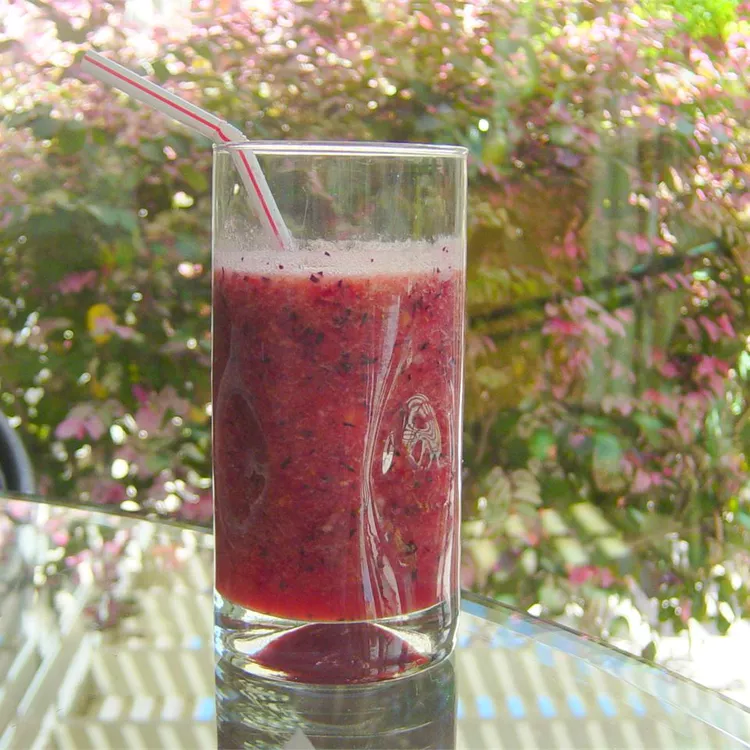

Home
Summer Sweet Smoothie

Description
Ingredients
- 2 cups cranberry juice
- 2 cups strawberries
- 1 cup blueberries
- 1 cup watermelon chunks
- 1 banana
- 2 fresh figs
Steps
-
Process the cranberry juice, strawberries, blueberries, watermelon,
banana, and figs in a blender until smooth and creamy.
- Enjoy immediately or keep cool in refrigerator.